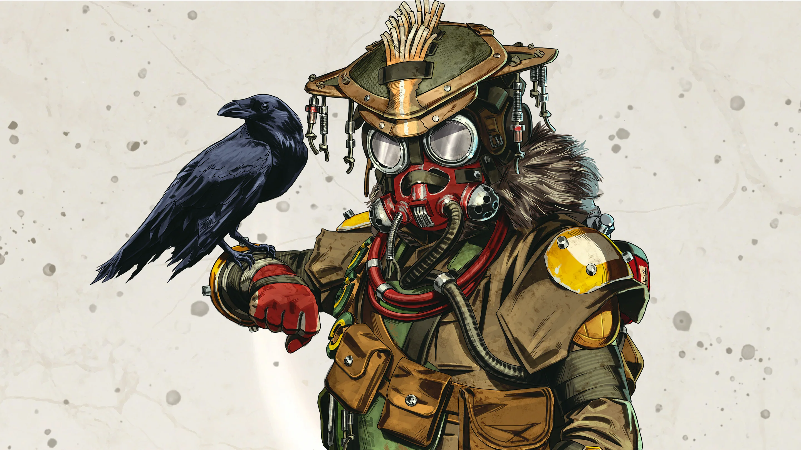
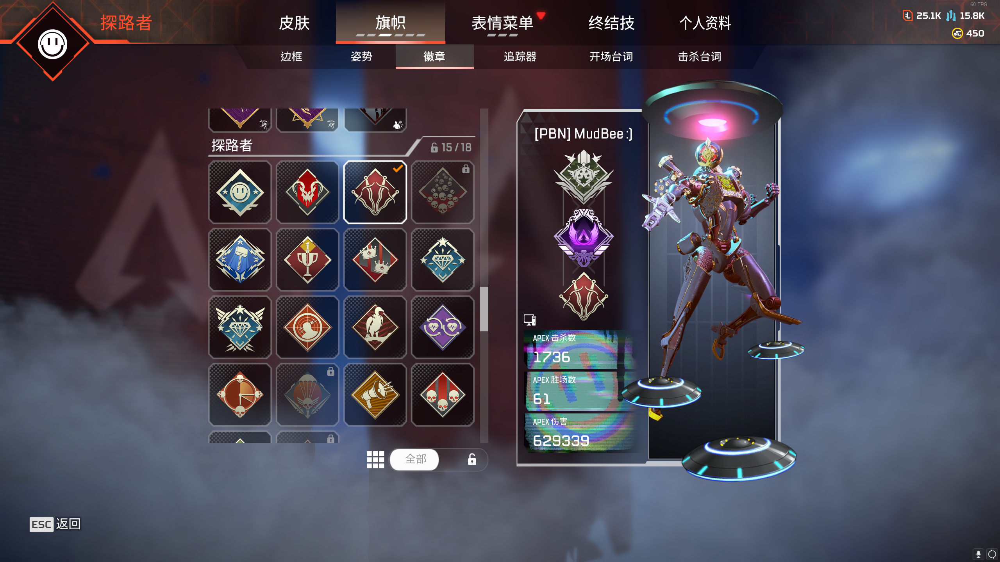

Logo

About this game

Apex Legends is a free-to-play battle royale-hero shooter game developed by Respawn Entertainment and published by Electronic Arts. It was released for PlayStation 4, Windows, and Xbox One in February 2019, for Nintendo Switch in March 2021, and for PlayStation 5 and Xbox Series X/S in March 2022. A mobile version of the game designed for touchscreens titled Apex Legends Mobile was released in May 2022 on Android and iOS. The game supports cross-platform play, excluding the aforementioned mobile platforms.
Gameplay
Apex Legends is a team-based battle royale game where squads of three players (or solo mode) drop onto an island and fight to be the last team or player standing. Each player selects a legend, which has unique abilities, such as tactical, passive, and ultimate abilities. The game focuses on teamwork, strategy, and gunplay. There are various legends to choose from, each with their own set of abilities and playstyles. Legends are periodically added or updated, keeping the game fresh and exciting.
My gaming experience
Apex Legends is my regular and favorite game, a game I've played for 853 hours. I love the various thrills that this game gives me, such as the crisp sound of smashing enemy armor. In FPS games when marksmanship is very important, but in Apex Legends it's not just about being a good shot, but body skills are also very important. This game allows players to discover many interesting stances because of the unique wall climbing and slide shoveling mechanics, such as TS (tap strafe), a stance that allows you to make quick turns in the air to dodge enemy bullets.
The future of this game
I was hoping that the future of my favorite game would be bright, but it wasn't. Apex Legends has seen a steady decline in daily active players, not because the game isn't fun to play, but because the servers have been criticized for lagging, and even crashing on the pro circuit, which is fatal for a competitive game. This is fatal for a competitive game. Another point is because of the ranking mechanism, in the last two seasons, the ranking mechanism has been modified, which leads to players not needing to kill other players just need to get a good ranking to make the segment rise, which leads to a lot of deformed gameplay, such as outside the circle to get ranked through the drug stocking. This mechanic doesn't make sense for an FPS game. I hope that these unreasonable mechanics can be gradually modified as well as upgraded servers in the future.
